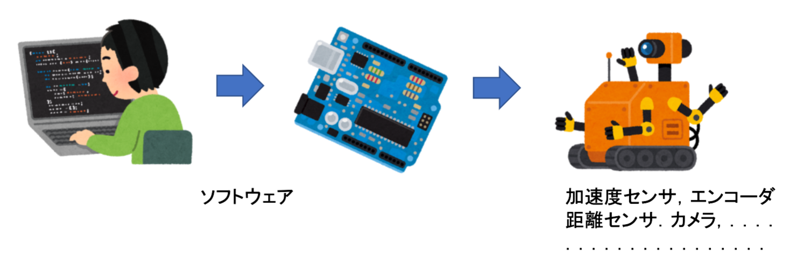
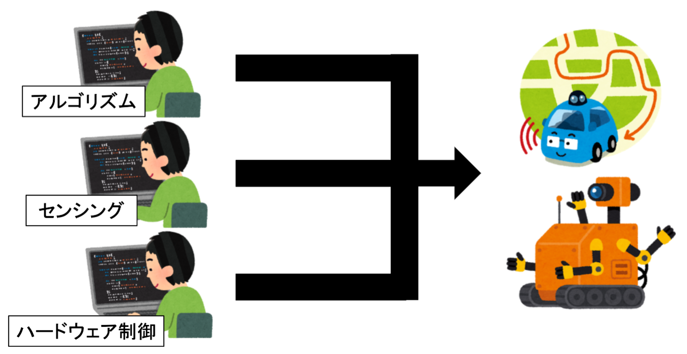
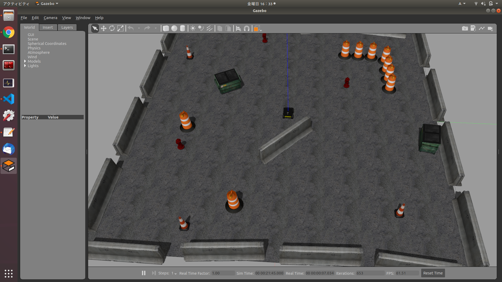
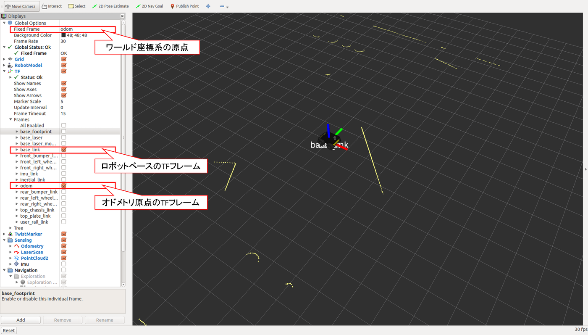
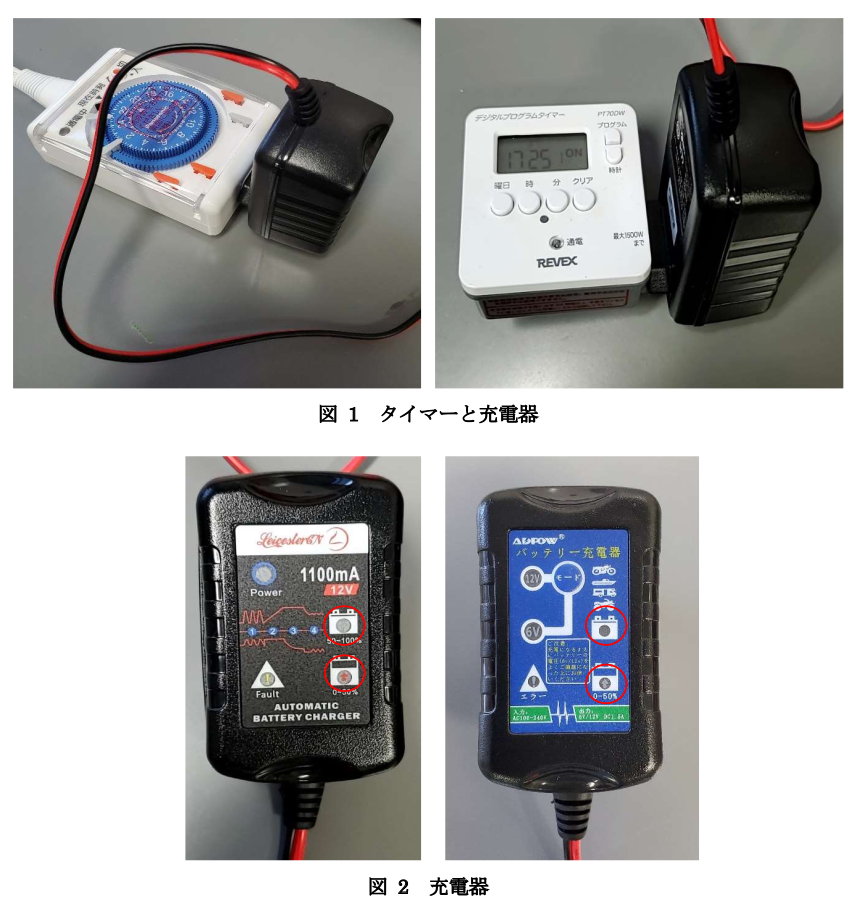

ROS資料
このサイトでは研究室で扱うツールの導入方法や使用方法，エラー対策などについてまとめています．
それらの知見をみなさんで共有したいと考えています．
また，新しく配属された人がROSの使い方を勉強するためのチュートリアルも兼ねていますので，ぜひ活用してください．
このサイトの編集方法
事前準備
- Githubアカウントの作成．
- PCにGitのインストール
- vscode(Visual Studio Code) のインストール
- Gitを使いやすくするためのvscodeの拡張機能のインストール(GitLens，GitGraph)
書き方
事前準備としてこのリポジトリを編集する権限を与える必要がありますが，それに関しては省略します．
このリポジトリをGithubからダウンロードする．
git clone https://github.com/tomson784/ros_practice.git
ディレクトリ構成は以下のようになっておりsrcの部分に編集するファイルが入っています．
(root)/
├─ .gitignore
├─ book.toml
├─ docker-compose.yml
├─ Dockerfile
├─ LICENSE
├─ README.md
├─.github
│ └─workflows
│ main.yml
└─src
├─ index.md
├─ SUMMARY.md
├─ :
├─ :
├─ :
src/SUMMARY.mdの内容は以下のような内容になっています．
- [このサイトについて](./index.md)
- [chapter-1](./chapter-1/index.md)
- [section-1-1](./chapter-1/section-1-1.md)
- [section-1-2](./chapter-1/section-1-2.md)
- [chapter-2](./chapter-2/index.md)
- [section-2-1](./chapter-2/section-2-2.md)
- [section-2-2](./chapter-2/section-2-2.md)
srcに対して相対的なパスを設定することで，個別に編集したファイルを章立てでまとめることができます．
ファイルはマークダウンで書く必要があります．それについてはこのサイトなどを調べてみてください．
書いた内容を反映する．
編集が終わったらgitを使って変更履歴を更新し，それをアップロードすることで変更内容が反映されます．
このリンクでもgitの使いかたを説明していますが，ここでは必要なコマンドのみ説明します．
以下の手順を行うことで変更内容の反映ができます．
git add .
git commit -m "どのような変更を加えたかについて説明"
git remote -vで以下のような表示が出ると思う．
origin https://github.com/tomson784/ros_practice.git (fetch)
origin https://github.com/tomson784/ros_practice.git (push)
次のコマンドでGithub上に反映することができる．
git push origin main
これで終了
ROSの使い方参考サイト
- ROS(Robot Operating System)を使う
- ロボットシステム学（2020/4s, 6s）
- ロボットシステム学講義
- ROS講座
- demura.net AI・ロボットをつくるために
- ROSの基本的な開発をしよう
- [ROSロボットプログラミング] ROSで使われる専門用語
このサイトのソースコードはこちらになります↓
Github Source
Summary
- このサイトについて
- 目次
- ROS入門
- ロボットのシミュレーション
- ナビゲーション
- ROSでYOLOを使う
- realsenseをROSで使う
- Velodyne
- Rviz
- xArm
- SLAM
- turtlebot3 Open3d Open3dのreconstructionsystemのサンプルについて reconstructionsystemを自分で取得したデータで実行
- Raspberry Pi
- その他
ROS入門
この章は主に新しく研究室に配属された人を対象としております．
ここではROSを使う上で最低限身に着けてほしい内容についての解説をします．
課題を交えてROSの使い方を勉強してもらいます．
気になったワードは逐一ググることをお勧めします．
質問や，修正箇所などがあれば，GitHubの機能にIssueというものがあるのでそこで質問を飛ばしてください．
Githubのアカウントがあればだれでも使用できます．
Issueの使い方はこちらのサイトを参照してください．→
https://seleck.cc/647
ここ からこのリポジトリに対してIssueを立てることができます．
わからないことがあれば，先輩たちなどに聞いてみてください
できるようになってほしいこと
- ROSの基本的なデータの受け渡しについての概要を理解し，実装できること
- ROSを使ったArduinoの制御
- ROSに流れてくるデータの保存(実験データの保存)
なぜROSをやる必要があるのか？
ロボット開発には画像処理，センシング，運動学，確率統計，ネットワーク，計算機科学，．．など，あらゆる知識が求められる．
センサなどが増えたらその分処理，工程が増えるのでプログラムを書くのがしんどくなってくる．

しかし現在，インターネット時代，オープンソースソフトウェア文化，などによりネット上に多くのパッケージが存在している．
それらを用いて組み合わせることで高度なアルゴリズムを手軽に実装できる．
（あくまでも昔と比較してです．基礎となる数学やプログラミングの知識は必要です．）

独立したプロセス（この表現が正しいかはしっかり確認してません．あくまでニュアンスです．）として各アルゴリズムが実装されるので，各処理の統合・分離が簡単にできる．（センサフュージョンなど）
処理ごとに分担して作成し，最後に統合するなどが簡単にできる．

グダグダ説明したけど言いたいことはただ一つ
つべこべ言わずにROSを勉強しよう
やること
ROS Wiki に準拠した内容で行います．
ROSはOSのバージョンに合わせてインストールする必要があるので気をつけてください．
今回の構成はいかのようにします．
| 項目 | 値 |
|---|---|
| 仮想環境 | VMware |
| OS | Ubuntu18.04 LTS |
| ROS Version | Melodic |
PC上にROSを扱える仮想環境を構築
仮想環境についてはこのサイトなどを参照してください．
仮想環境の作り方は
ROS講座54 VMWare上でROSを使う
を参考にUbuntuの環境を作成してください．
macの人は VMWare Fusion 12 Playerで試してみてください．
VMwareでうまくいかない人はVirtualBoxを使用してください．
ROSをインストール
ROS Wiki は日本語ページも存在しますが，日本語版は古いものしか存在しないので，英語版を参照することをおすすめします．
ROSのインストールはこのサイトに従って行います．
以下のコマンドを順番に実行して，ROSのインストールをしてください．
sudo sh -c 'echo "deb http://packages.ros.org/ros/ubuntu $(lsb_release -sc) main" > /etc/apt/sources.list.d/ros-latest.list'
sudo apt-key adv --keyserver 'hkp://keyserver.ubuntu.com:80' --recv-key C1CF6E31E6BADE8868B172B4F42ED6FBAB17C654
sudo apt update
sudo apt upgrade
sudo apt install ros-melodic-desktop-full
echo "source /opt/ros/melodic/setup.bash" >> ~/.bashrc
source ~/.bashrc
sudo apt install python-rosdep python-rosinstall python-rosinstall-generator python-wstool build-essential
sudo rosdep init
rosdep update
mkdir -p ~/catkin_ws/src
cd ~/catkin_ws && catkin_make
echo "source ~/catkin_ws/devel/setup.bash" >> ~/.bashrc
source ~/.bashrc
端末を開いてroscoreができることを確認してください．
roscoreが正常に動作すればROS環境の構築完了です．
こまったとき(ROSが正常に作動しない，再インストールしたいときなど)
は以下のコマンドでROS関連のパッケージを削除することができます．
sudo apt-get purge ros-melodic-*
課題
roscoreの正常な動作を確認する（スクショを提出する？）
多分こんな文字が表示されると思う
... logging to ~/.ros/log/9cf88ce4-b14d-11df-8a75-00251148e8cf/roslaunch-machine_name-13039.log
Checking log directory for disk usage. This may take awhile.
Press Ctrl-C to interrupt
Done checking log file disk usage. Usage is <1GB.
started roslaunch server http://machine_name:33919/
ros_comm version 1.4.7
SUMMARY
========
PARAMETERS
* /rosversion
* /rosdistro
NODES
auto-starting new master
process[master]: started with pid [13054]
ROS_MASTER_URI=http://machine_name:11311/
setting /run_id to 9cf88ce4-b14d-11df-8a75-00251148e8cf
process[rosout-1]: started with pid [13067]
started core service [/rosout]
ROSの基本的なデータの受け渡し
ROSのパッケージを作成して，Publisher，Subscriberを実行する．
課題
Terminal上に以下の文字列が表示されるか確認（スクショ？未定）
[ INFO] 1251943144.400553000: Received [Hello there! This is message [1]]
[ INFO] 1251943144.600712000: Received [Hello there! This is message [2]]
[ INFO] 1251943144.801003000: Received [Hello there! This is message [3]]
:
:
:
ROSに流れてくるデータの保存
rosbagを用いることで，ROSで動いているセンサや入出力情報をまとめて保存することができます．
研究には欠かすことのできなものなので，覚えて下さい．
課題
turtlesimがrosbagで動いていることを確認する．
ROSを使ったArduinoの制御
ROSを用いたArduino制御のチュートリアルのリスト
やってもらいたい項目
仮想環境とホストPCでArduinoのシリアルポートを共有する方法については ここ を参照
課題
rqt_graphなどでノードが繋がっているか確認してもらう．
ROSによるロボットのシミュレーション
gazeboを用いることで，物理シミュレーションでロボットを動かすことができる．
turtlebot3のシミュレーション
Ubuntu20.04でのturtlebot3のシミュレーション
すぐに試すためのサンプル環境
Huskyのシミュレーション
HuskyのGazeboへの導入と制御方法について説明する。
HUSKYについて[1]
「HUSKY（ハスキー）」は、中規模のロボット開発プラットフォームです。その大きなペイロード容量と電力システムは、研究ニーズを満たすためにカスタマイズされた広範囲のペイロードを収容できます。ステレオカメラ、LIDAR、GPS、IMU、マニピュレータなどを、当社統合エキスパートによりUGVに追加できます。ハスキーの頑丈な構造と高トルクのドライブトレインは、他のロボットが行けないところであなたの研究を進めることができます。ハスキーはコミュニティ主導のオープンソースコードでROSにより完全にサポートされています。
Gazeboへの導入
-
Husky関連のパッケージをインストール( apt-get )
apt-getから (他のパッケージもあるので必要なら入れる)[2]$ sudo apt-get update $ sudo apt-get install ros-$ROS_DISTRO-husky-gazebo $ sudo apt-get install ros-$ROS_DISTRO-husky-vizgithubからのインストールではビルドエラーが出る。
必要なパッケージがインストールされないため。
-
動作確認
Husky シミュレータの起動（gazebo）
図のGazebo環境とrvizが立ち上がる。
ジョイコンをつなげれば，制御もできる。$ roslaunch husky_gazebo husky_playpen.launch $ roslaunch husky_viz view_robot.launch 
参考
[1] 無人自律走行車両「JACKAL」「HUSKY」（Clearpath Robotics社)
[2] Navigation Stack を理解する - 2.1 move_base: ROSで遊んでみる
ナビゲーション
ROSにおけるナビゲーションについて
move_baseによるナビゲーション
ROSパッケージのmove_baseによって経路計画や追従，障害物回避を行なうことができます。
move_baseについて
動作確認
環境
| PC | RAM | OS | ROS version |
|---|---|---|---|
| mouse-pc（古いパソコン） | 32 GB | Ubuntu 16.04 | Kinetic |
Install
apt installの場合(推奨)
以下のコマンドで必要なパッケージが全て入るかは不明。誰か試してみてください
$ sudo apt-get install ros-$ROS_DISTRO-move-base
git cloneの場合
以下のコマンドのとおり。ビルドの順番に注意。まとめてやらない。
$ cd ~/catkin_ws/src
$ git clone https://github.com/ros-planning/navigation.git
$ cd ..
$ catkin_make --pkg costmap_2d
$ catkin_make
注意(Melodic以前)
- githubから最新のパッケージをインストールするとビルドでエラー
→ 古いバージョンをインストールする。代わりに以下のコマンドでインストール。参考
Melodic
$ git clone https://github.com/ros-planning/navigation.git -b 1.16.7 --depth 1
Kinetic (Melodicのものでも動くはずだが一応)
$ git clone https://github.com/ros-planning/navigation.git -b 1.14.9 --depth 1
実行
move_baseは複数のパラメータファイルを実行時に読み込む必要があるため，基本はlaunchで実行する。各パラメータファイルの書き方についてはこちら
launchファイル
<?xml version="1.0" encoding="UTF-8"?>
<launch>
<!-- move_base -->
<node pkg="move_base" type="move_base" respawn="false" name="move_base" output="screen">
<rosparam file="$(find {ymalファイルのあるパッケージ名})/config/move_base.yaml" command="load" />
<rosparam file="$(find {ymalファイルのあるパッケージ名})/config/costmap_common.yaml" command="load" ns="global_costmap" />
<rosparam file="$(find {ymalファイルのあるパッケージ名})/config/costmap_common.yaml" command="load" ns="local_costmap" />
<rosparam file="$(find {ymalファイルのあるパッケージ名})/config/costmap_local.yaml" command="load" />
<rosparam file="$(find {ymalファイルのあるパッケージ名})/config/costmap_global.yaml" command="load" />
<rosparam file="$(find {ymalファイルのあるパッケージ名})/config/planner.yaml" command="load" />
<!-- move_baseのパラメーラはここでも変更できる
<remap from="/cmd_vel" to="/ypspur_ros/cmd_vel" />
-->
</node>
</launch>
参考
ROS Wiki Navigation
Gitで特定のブランチorタグをcloneする
パラメータファイルの書き方
move_base実行時に必要なパラメータについてのメモ。(move_baseについてはこちら)
パラメータとして，だいたい次の設定ファイルが必要。名前はなんでもいい。
- costmap_common.yaml：グローバルとローカルコストマップのパラメータ，2つに共通するものを書く。
- costmap_global.yaml：グローバルコストマップのパラメータ
- costmap_local.yaml：ローカルコストマップのパラメータ
- planner.yaml：グローバル・ローカルプランナーのパラメータ，それぞれ設定ファイルを分けてもよい。
- move_base.yaml：move_baseのパラメータ，直接launchファイルに書いても良い．
作成方法
以下の内容のyamlファイルを作成する。
costmap_common.yaml
obstacle_range: 2.5
raytrace_range: 3.0
footprint: [[0.20, 0.22], [-0.20, 0.22], [-0.20, -0.22], [0.20, -0.22]]
#robot_radius: ir_of_robot
robot_base_frame: base_link
update_frequency: 1.0
publish_frequency: 1.0
transform_tolerance: 0.5
unknown_cost_value: -1
パラメータ説明(common)
このパラメータをglobal,localにそれぞれ記述しても同じ追記予定
見出し
シャープを文字の先頭に記述する。# が増えるごとに文字のサイズが小さくなる。
# が3つ目以降は下線が付かない。
シャープと見出し文字の間には半角スペースを1つ入れること。
コード
# 見出し h1
見出し h1
===
## 見出し h2
見出し h2
---
### 見出し h3
#### 見出し h4
##### 見出し h5
###### 見出し h6
表示結果
見出し h1
見出し h1
見出し h2
見出し h2
見出し h3
見出し h4
見出し h5
見出し h6
箇条書きリスト
ハイフン、プラス、アスタリスクのいずれかで箇条書きリストを記述可能。
ハイフン、プラス、アスタリスクと箇条書きの項目の間には半角スペースを1つ入れること。
コード
- リスト1
* リスト2
+ リスト2.1
- リスト2.1.1
* リスト2.1.1.1
- リスト2.2
+ リスト3
表示結果
- リスト1
- リスト2
- リスト2.1
- リスト2.1.1
- リスト2.1.1.1
- リスト2.1.1
- リスト2.2
- リスト2.1
- リスト3
番号付きリスト
コード
1. テキスト1
2. テキスト2
4. テキスト3
1. テキスト3.1
2. テキスト3.2
2. テキスト4
表示結果
- テキスト1
- テキスト2
- テキスト3
- テキスト3.1
- テキスト3.2
- テキスト4
折り畳み
コード
<details><summary> 折りたたみ </summary>
本文
- 箇条書き
</details>
表示結果
折りたたみ
本文- 箇条書き
空行・改行
コード
1行目 (半角スペース2つ)
2行目 (Enter×2)
3行目<br>
4行目
<br>
<br>
5行目
表示結果
1行目
2行目
3行目
4行目
5行目
スペース
MarkDownでは4種類の空白がある。
コード
空白なし
スペースキーによる空白␣半角␣␣全角
  より狭い空白
半角スペースと同じサイズの空白
 半角スペースより少し広めの空白
 半角スペースよりさらに広めの空白 全角スペースとほぼ同じ幅
表示結果
空白なし
スペースキーによる空白 半角 全角
 より狭い空白
半角スペースと同じサイズの空白
半角スペースより少し広めの空白
半角スペースよりさらに広めの空白 全角スペースとほぼ同じ幅
コードの挿入
ブロックはまとめて、インラインは文章中にコードを挿入する場合など。
コード表示内ではMarkdownは効かず、空白やタブなどもそのまま表示される。
ブロック
コード
```
コード内容
### 見出し
```
表示結果
コード内容
### 見出し
インライン
コード
`コード<br> ###見出し`
表示結果
コード<br> ###見出し
リンクの挿入
クリックしたらそのページに飛ぶやつ。
内部リンクは見出し名に # を1つだけつける。
コード
- 外部リンク(URL) 2. 外部リンク(パス) 3. 内部リンク 4. 画像付きリンク
[Google](http://google.com/)
[README](./README.md)
[画像の挿入](#画像の挿入)
[](#画像の挿入)
画像の挿入
MarkDown記法では画像のサイズや位置を変えられないのでHTMLタグで指定する方法がある。
ただし、つかえない場合もあるので注意。
コード
文法：
2,3行目はHTMLタグ

<img src="./image.jpg" width="100px"/>
<img src="./image.jpg" style="opacity:0.3;"/>
表示結果

テーブルの挿入
入力補完がある？
見出し行（1行目）と最初のレコード行（3行目）の間に、
|:--|--:|:--:|
のような行が入るが、実際には表示されない。
表内で表示される文字の位置に関係している。
-の数は1つでいい。
表内で一部装飾文字系は利用できる。
コード
| header | ヘッダー |見出し |
|:-----------|------------:|:------------:|
|左寄せ | 右寄せ | 中央寄せ |
| column | column | column |
| *column* | _column_ | **column** |
| __column__ | `column` | column |
表示結果
| header | ヘッダー | 見出し |
|---|---|---|
| 左寄せ | 右寄せ | 中央寄せ |
| column | column | column |
| column | column | column |
| column | column | column |
文字装飾
多いのでテーブルで表す。
最後のカスタムについてはHTMLのタグ。中央寄せなどもできる。
| 装飾内容 | コード | 表示結果 |
|---|---|---|
| 太字 | **太字** __太字__ | 太字 |
| 斜体 | *斜体* _斜体_ | 斜体 |
| 太字+斜体 | ***太字+斜体*** or ___太字+斜体___ | 太字+斜体 |
| 打ち消し | ~~打ち消し~~ <s>打ち消し</s> | |
| 下線 | <u>下線</u> | 下線 |
| 下付き | 下付き<sub>2</sub> | 下付き2 |
| 上付き | 上付き<sup>2</sup> | 上付き2 |
| カスタム | <span style="color:green; font-size:10pt; border: 1px red solid; padding: 2px;">text</span> | text |
水平線
3つ以上の-,*,_を入力する。
間に半角スペースがあってもよい。
コード
---
***
___
* * * *
表示結果
エスケープ
マークダウン記号の前に \ をつける
コード
\`インライン表示されなくなる`
***太字+斜体***
\***斜体のみ無効***
\*\**太字のみ無効***
\*\*\*太字+斜体***
表示結果
`インライン表示されなくなる`
太字+斜体
*斜体のみ無効*
**太字のみ無効**
***太字+斜体無効***
引用
コード
> 引用文１
>
> 引用文２
表示結果
引用文１
引用文２
コメントアウト
表示はされないが残しておきたいときに。HTML表記推奨。
コード
<!-- コメントアウトしたい内容 複数行も可 -->
[](
単行のみコメントアウト
)
表示結果
表示されない。Visual Code上ではHTML表記で書いた場合は緑文字になる。
参考
Markdown記法 サンプル集
Qiita マークダウン記法 一覧表・チートシート
Markdownチートシート
Markdown 記法 サンプル 一覧
Markdown記法でコメントアウトする
鉛蓄電池充電方法
ここでは研究室で使用している鉛蓄電池の充電方法について説明する。
注意事項
◯ 12 V バッテリーの場合,電圧が 12 V を下回ってはいけない
◯ 使用したらなるべくすぐ充電する
◯ バッテリーを充電したまま帰宅しない
充電手順
- タイマーをセットする。タイマーのセットについては次章参照。
- バッテリーと充電器を繋ぐ。
充電器のモードがバッテリー電圧になっていることを確認。 - タイマーに充電器を差した状態(図 1)でコンセントに差す。
- 充電が終わるまで待つ。(12 V バッテリーで 13.0 ~ 13.4 V ぐらいまで)
- 充電中,充電器の LED が点滅する(図 2 の赤丸部分)し，満充電で点灯する。
12.7 V 程度で点滅が止まることがあるが,その場合はそのまま充電を続ける。

タイマー設定方法
-
タイマーは二種類 (アナログとデジタルタイプ)
-
設定する時間はバッテリーの容量と充電器の出力によって決める。
充電器は 1100 mA (図 2 左),1500 mA (図 2 右)で出力が違う。(例)
バッテリー容量 5 Ah, 充電器 1500 mA でテスターによる計測電圧が12.6 V の場合 充電時間：約2時間 <- あくまで目安
アナログ
-
下図左の現在時刻から充電時間分進んだ目盛に白いストッパーをセットする。(1 目盛は 15 分)
-
図の右上の入切ネジを時計回りに回して「入」にする。
これで通電される(LED がオレンジに)
デジタル
通電を ON と OFF にする曜日と時間を指定できる。(13 パターン)
1つを11:00 ~ 17:30 に ON するように設定してある。
-
表示されている現在時刻を確認。
-
通電が OFF になっている場合,ON にする。
・「プログラム」のボタンを押す。
・「曜日」「時」「分」のボタンを押して ON の時間を設定
・「時計」を押して戻る。 -
通電 OFF にする時間を設定
・ON を設定するときと同じ。
・表示がOFFになっていることを確認。


Git，Githubの課題用のページ
課題としてこのサイトのソースコードをvscodeで編集して，その変更内容をこのサイトに反映してください
・編集内容の例）oo月oo日編集しました．など
変更履歴とアカウント名は紐づけられるので，編集者を確認するために本名を書く必要はありません．
各位，ここから下に1行づつコメントを追加してください↓
- 4月15日に編集したよ（by稲川）
- 4月15日編集しました。
- 4月16日に編集を行いました。
- 4月16日に編集しました。
- 4月16日に編集しました。
- 4月20日、編集しました。
- 4月20日、編集しました。
- 4月20日に編集しました．（粟野）
- 4月20日に編集しました．（石橋）
- 4月23日に編集しました。
- 4月23日に編集しました。
- 4月23日に編集しました。
- 4月26日に編集しました。
- 4月27日に編集しました。
- 4月29日に編集しました。